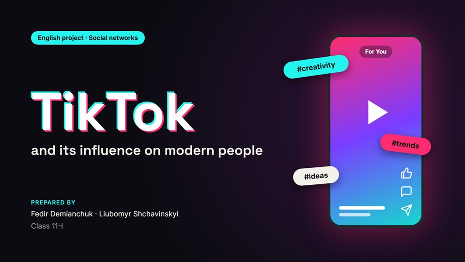

Шкільні проєкти
Презентації учня 11-І класу Щавінського Любомира
Відкриваються прямо в браузері — на ноутбуці, проєкторі чи телефоні. Гортай ← → або свайпом, F — на весь екран.

Вплив шкідливих звичок на людину
Куріння й вейпи, алкоголь, наркотики, ігри та соцмережі — з цифрами ВООЗ, джерелами і 3D-моделями молекул.
Відкрити →
TikTok and Its Influence on Modern People
Проєкт з англійської: як TikTok впливає на творчість, мислення й самовираження.
Відкрити →